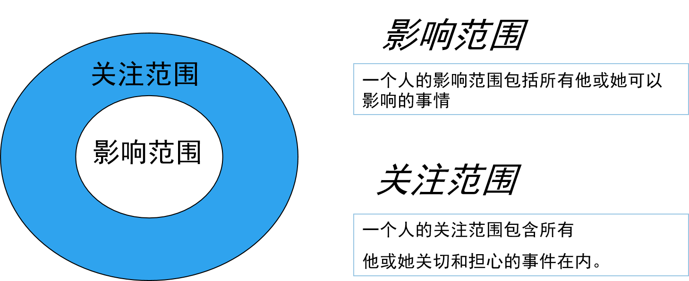

赋能
高效能人士
7个习惯
什么是习惯

我们
是怎么
说的
重新
探索自我
由内而外全面造就自我
为圆满人生作准备
持续成熟模式
七个习惯模型
 "三个阶段"
"三个阶段"
依赖期：围绕着“你”这个观念。
独立期：着眼于“我”的观念。
互赖期：从“我们”的观念出发。
谁也无法说服别人改变。
我们每个人都守着一扇只能从内开启的“改变之门”，不论动之以情或说之以理，我们都不能替别人开门。
习惯一：积极主动
- 消极被动行为: 刺激 -> 回应
- 主动积极行为: 刺激 -> 依据价值自由选择 -> 回应
-
"人类的自由就是我们都可选择如何回应刺激"
潜能 定义 自觉 检验思想、情绪及行为 良知 明辨是非，遵循正直 想象力 超越现实及经验的思考 独立意志 不受外力影响的行动

"一个迟到者的内心独白"


“影响圈与关切圈”

用影响圈工作

习惯二：以终为始

- 安全感：代表价值观、认同、自尊自重与归属感。
- 人生方向：是生命的追求方向，以及决断所依据的原则。
- 智慧：是对事物的认知、理解与判断能力。
- 力量：则指采取行动、达成目标的能耐。
影响圈的核心

生活的重心
- 以配偶为重心
- 以家庭为重心
- 以金钱为重心
- 以工作为重心
- 以名利为重心
- 以享乐为重心
- 以敌人或朋友为重心
- 以宗教为重心
- 以自我为重心

个人
使命宣言
习惯三：要事第一

80/20原则

时间管理

预防胜于治疗——应努力避免紧急事情

从个人
到依赖
习惯四：双赢思维

习惯五：知己知彼

沟通的方式

同理心倾听

习惯六：综合综效

沟通的层次

习惯七：不断更新

从四个层面磨练自己


Thank
You!
Q&A